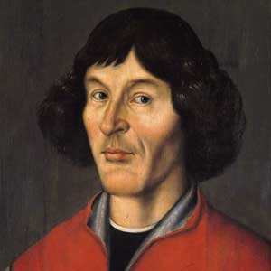

featured news

Crew Dragon is already certified to do regular space missions.
NASA last Tuesday, November 10, granted certification for the SpaceX Crew Dragon spacecraft. It is approved to conduct manned space flights to the International Space Station (ISS), whenever it wants. This means that everything is approved for the Crew-1 mission, which will take four more astronauts to the orbital laboratory next Saturday, November 14th.
Other news

featured article

nebula's
A nebula, also known as a nebula, is an interstellar cloud of dust, hydrogen, helium and ionized gases. Originally, the nebula was the name of any diffuse celestial body, including galaxies beyond the Milky Way. The Andromeda Galaxy, for example, was attributed as the Andromeda Nebula (and spiral galaxies in general as "spiral nebulae") before the true nature of galaxies was confirmed in the early 20th century by Vesto Melvin Slipher, Edwin Hubble and others.
Other articles

great astronomers
tycho brahe
Tycho Brahe was a Danish nobleman, astronomer, and writer known for his accurate and comprehensive astronomical observations. He was born in the then-Danish peninsula of Scania. Tycho was well known in his lifetime as an astronomer, astrologer, and alchemist. He has been described as "the first competent mind in modern astronomy to feel ardently the passion for exact empirical facts". Most of his observations were more accurate than the best available observations at the time.
Other astronomers
Isaac Newton
Galileo Galilei
- 
Nicolaus Copernicus
Johannes Kepler